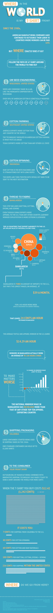

This long-form infographic was specifically designed for scrolling on the web.
It tells the story of the path of a T-Shirt around the world, based on
NPR's "Planet
Money Makes a T-Shirt". I was first introduced to this narrative in an introductory human geography course at UW–Madison, and it is
one of the projects that sparked my interest in the field itself.

↑ back to top